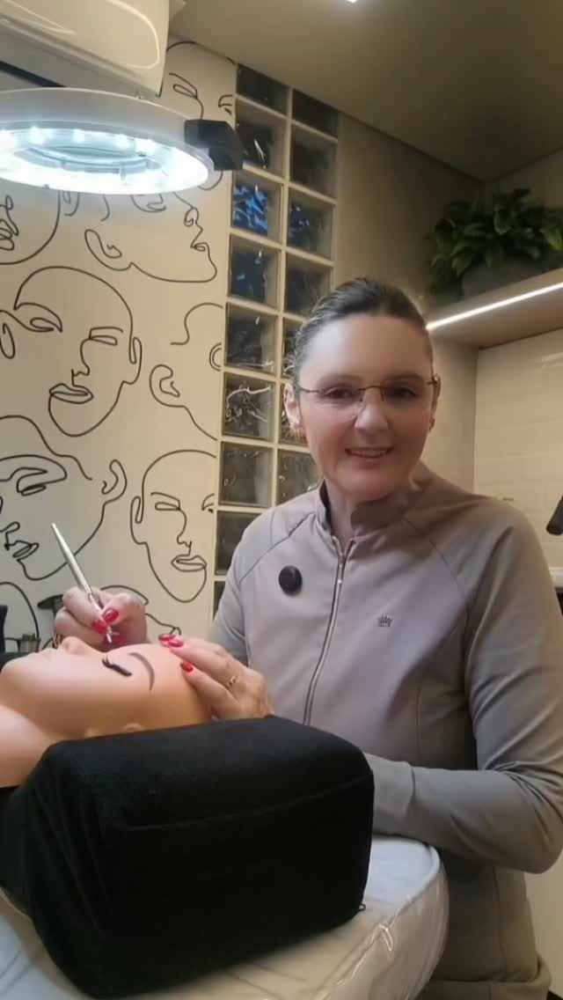
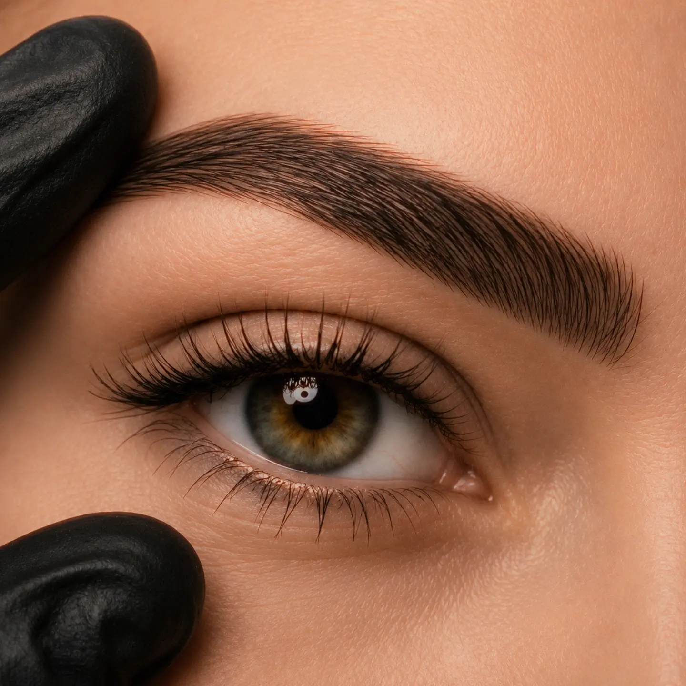
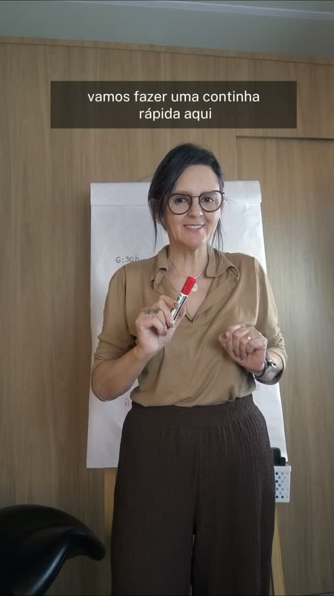

Eu escolhi trabalhar com beleza porque descobri o que acontece quando uma mulher se olha no espelho e gosta do que vê. A sobrancelha é a porta. O que entra junto é outra coisa.
Atendo com hora marcada, uma cliente por vez, em Ponta Grossa. Não divido o horário, não sobreponho agenda e não apresso desenho. Quem senta na cadeira tem o tempo inteiro.
Minha especialidade é o fio realista. É a técnica mais lenta e a que menos perdoa pressa: cada traço é feito à mão, com direção e profundidade próprias. É também a única que resolve o medo real da cliente, que não é fazer a sobrancelha, é olhar no espelho depois e não se reconhecer.
Por isso digo não com alguma frequência. Nem toda pele está pronta, nem todo histórico permite, e nem toda expectativa cabe no que a micropigmentação faz. Prefiro perder um procedimento a entregar um resultado que você vai carregar por um ano.
Além do atendimento, formo profissionais. O que aprendi errando eu entrego pronto para quem está começando, porque a conta do erro na pele de outra pessoa é alta demais para ser paga duas vezes.


A avaliação é o primeiro passo e acontece no estúdio. Mande uma mensagem contando o que te incomoda hoje.